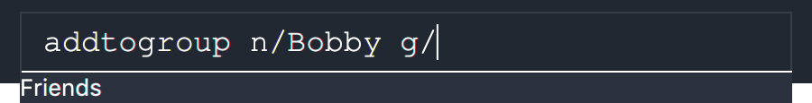
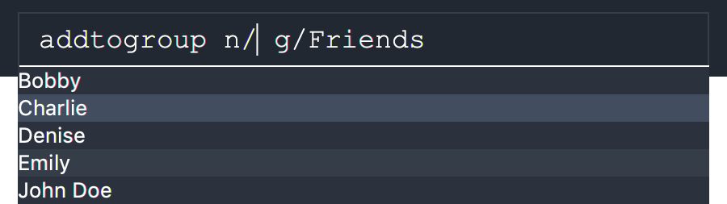

Overview
TimeBook is a scheduling application that helps busy NUS undergraduates keep track of their own and their friends' schedules to find the common free time among the user and their friends and a convenient place to meet. The user interacts with TimeBook through a Command Line Interface (CLI), and its Graphical User Interface (GUI) is created with JavaFX as seen below.
TimeBook was built by a team of five NUS Computer Science undergraduates over the course of eleven weeks, as part of the CS2103T module. It is written in Java, and has about 25 kLoC. This project portfolio document details my contributions to the project.
Summary of contributions
-
Major enhancement: added fuzzy matching for commands auto-completion and context-sensitive suggestions for command parameters
-
What it does
Provides real-time context-sensitive suggestions for commands and parameter values. Users can use the same keyboard keys to select and autocomplete the commands and parameters.
In terms of commands, this feature dynamically filters all the valid commands based on the user’s input. As seen in the below figure, the user has typeddand only the relevant commands are suggested. Additionally, users can create their own abbreviations when typing in commands. Instead of typingdeletefromgroup, they can type any of its letters as long as the sequence is maintained. For example, the abbreviationsdfg,delfromgroup,dfgr,dmgwill also suggest thedeletefromgroupcommand.Figure 1. Command suggestions with fuzzy matchingIn terms of context-sensitive parameter values, imagine the user wants to remove someone from their CS2103 group using the command
deletefromgroup. With the group specified (i.e.g/CS2103), this feature only suggests the names of the people within the group when the user is specifying a name to delete (usingn/). The feature works in real-time as the user begins typing "Charlie" and the suggestions are filtered to exclude "Bobby" and "Denise".Figure 2. Example of context-sensitive suggestion for the name parameter (n/) in thedeletefromgroupcommand -
Justification
This feature significantly improves the product’s user experience, especially for novices, as users can discover what commands are available while using the app instead of continuously reference the user guide. For advanced/longtime TimeBook users, personalized command abbreviations lets them use TimeBook to solve scheduling problems faster instead of being slowed down by command entry. The parameter value suggestions let all users quickly see, select then autocomplete what they intended to type with just one additional keypress. -
Highlights
This enhancement affects existing and future commands. It required consideration of design trade offs to ensure scalability. Currently, other developers can effortlessly add this feature to their own commands. At the same time, this feature scales by letting them build more complex suggestion behaviours if needed. -
Credits
The feature was inspired by IntelliJ’s Code Completion feature.
-
-
Minor enhancement
Added a history feature that allows the user to navigate to previous commands using the Up/Down arrow keys. -
Code contributed: Please view the code that I contributed at Reposense.
-
Other contributions:
-
Project management:
-
Managed release
v1.3on GitHub
-
-
Documentation:
-
Regrouped commands in the User Guide based on what they do (i.e. Navigation, Person Management, Group Management and Advanced Features) (#166)
-
-
Testing:
-
User Guide Contributions
Below are the sections that I contributed to the User Guide. They showcase my ability to write documentation targeting our end-users of NUS students. |
Suggestions Autocomplete
TimeBook comes with a helpful feature that provides suggested commands or relevant values so you can spend less time typing commands and more time on your group meetings.
When you type a command, TimeBook will show a dropdown with similarly matching commands.
For example, you type in the command add.
TimeBook will then suggest commands such as addevent, addgroup, addperson like so:
If you meant to type the addevent command, you can immediately select it by pressing the Tab key.
Otherwise, you can pick other options by using the Up or Down arrow keys and then hit the Tab key to confirm your selection.
For now, try selecting the addtogroup command using the Down and Tab keys.
TimeBook will complete the command like this:

 You can type an abbreviated version of any command as long as the letters are in order!
For example, instead of typing
You can type an abbreviated version of any command as long as the letters are in order!
For example, instead of typing addtogroup, try atg.
Remember how TimeBook can also suggest relevant values?
Let’s try that by specifying a person’s name using the n/ parameter like so:
Again, TimeBook provides useful suggestions, in this case, the names of the people we’ve previously added. Now, try using the Tab key to immediately fill in "Bobby".
Now, let’s complete the addtogroup command.
Let’s add Bobby to the Friends group by typing g/ and using the suggestions to help us pick the Friends group.

|
–Tab–> |

|
Let’s say we change our mind and don’t want to add Bobby to the Friends group. No problem, just remove Bobby’s name and pick someone else using the familiar Up, Down and Tab keys. TimeBook is smart enough to only fill in the name parameter and won’t mess up the rest of your command.

|
–Tab–> |

|
Congratulations! You’ve now mastered the suggestions feature using just three simple keys, the Up and Down arrow keys to navigate between suggestions and the Tab key to select it.
- How do I store my details and schedule?
-
When you first start using TimeBook, a default profile will be created for you! This default profile will have a default name:
User
To personalize TimeBook and make it yours, renameUserby entering the commandedituser n/Your Name Here. If you’d like to fill in more details, you can do so using theeditusercommand.
Developer Guide Contributions
Below are the sections that I contributed to the Developer Guide. They showcase my ability to write technical documentation and the technical depth of my contributions to the project. |
Command Suggestions feature
Implementation
The command suggestions mechanism is facilitated by SuggestionLogic.
Through user-interface events provided by SuggestingCommandBox, it parses the command that was entered to provide context-sensitive suggestions.
It does this by identifying the commandWord (e.g. deleteperson, addperson, etc.) and arguments provided (e.g. n/Alice, g/CS2103T) and by using the caret position, provides command suggestions if the caret is located within the commandWord section or provides argument-specific suggestions by delegating to the Suggester registered for the specific commandWord.
Given below is an example usage scenario and how the command suggestions mechanism behaves at each step. Ultimately, this is what the user will see:
Step 1. The user types in the command deleteperson n/| and the SuggestingCommandBox UI class passes the command text (i.e. deleteperson n/) and the caret position index (i.e. 15) to SuggestionLogic.
The vertical line/pipe character (i.e. |) denotes the position of the caret and is not part of the entered command itself.So for the above example, the command entered is deleteperson n/ with the caret at the end of the command.
|
SuggestingCommandBox UI class passing UI data to the SuggestionLogic class to obtain suggestions.Step 2. The SuggestionLogic asks the TimeBookParser to tokenize the command text into its two parts: the commandWord and the arguments. This is needed so the SuggestionLogic knows which Suggester to use later.

Step 3. The SuggestionLogic then checks where the caret is currently positioned, either within the commandWord or within the arguments section. In this case, the caret is placed after the n/ so it is within the arguments section. To read how the behaviour changes if the caret was placed within the commandWord section, click here.

Step 4. The SuggestionLogic asks the static Suggester class which Prefixes are supported by the current commandWord (i.e. deleteperson) for tokenizing the arguments. This list of supported Prefixes, together with the command arguments, are passed to the static ArgumentTokenizer to parse it into an ArgumentList containing CommandArguments. Each CommandArgument contains the type of Prefix and the user-entered value.
Step 5. The SuggestionLogic then asks the static Suggester class to create the relevant Suggester object based on the commandWord. In this case, the static Suggester class returns a new DeletePersonCommandSuggester because the commandWord is deleteperson.

SuggesterStep 6. The SuggestionLogic asks the ArgumentList object which CommandArgument is currently selected based on the user’s caret position. In this case, it is the CommandArgument with the Prefix of PERSON_NAME and value of an empty string because the caret is positioned within the n/ text and no value has been entered.
CommandArgument is currently selected
Step 7. The SuggestionLogic asks for the suggestions from the DeletePersonCommandSuggester by providing three things to it. First, the current Model object, second the previously parsed ArgumentList object and finally, the CommandArgument to provide suggestions for. After obtaining the list of suggestions, the SuggestionLogic class returns it to the SuggestingCommandBox UI class for display.
The following sequence diagram condenses all the above diagrams into one, given the input deleteperson n/|:
deleteperson n/|
The SuggestionLogic behaves differently when the caret position is within the commandWord section. The sequence diagram below shows the behaviour for the case of find|person n/. To read how the behaviour changes if the caret was placed within the arguments section, click here.
commandWord section
The result is the following:
commandWord sectionThe following activity diagram summarizes what happens when a user interacts with the command input box:
Design Considerations
Aspect: |
Choice |
Pros |
Cons |
How command suggestions gets its suggestions |
1. Ask |
1. Easy to implement. |
1. May have performance issues in terms of CPU and memory usage as |
2. Cache suggestions based on entered command and caret position |
1. Will use less CPU, may use less memory. |
1. Difficult to properly account for all the conditions that should cause a cache invalidation/recalculation of suggestions. |
|
Correctness of suggestions is preferred over additional CPU/memory usage as caching suggestions but improperly invalidating them can lead to user (and developer) confusion. In this design, |
|||
Aspect: |
Choice |
Pros |
Cons |
Data structure to pass around the command arguments |
1. Create an |
1. Provides |
1. Increased complexity in extracting command arguments for simpler |
2. Reuse |
1. We do not need to maintain a separate data structure due to reuse, and developers familiar with how |
1. |
|
The chosen design allows for more complex |
|||